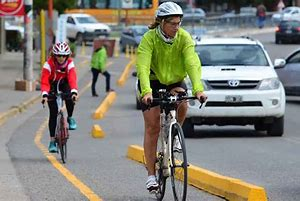
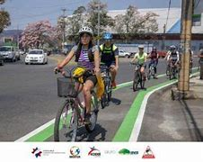
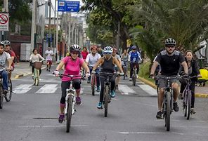

El ciclismo urbano o consiste en la utilización de la bicicleta como medio de transporte urbano, generalmente para distancias cortas. Debido a la proliferación del automóvil a partir de la Segunda Guerra Mundial, que provocó la paulatina congestión del tráfico urbano y la invasión del espacio público, la bicicleta se convirtió en una de las principales alternativas para mejorar la habitabilidad de la ciudad. Algunos de los países que han utilizado progresivamente el ciclismo urbano como medio de transporte importante son India, China, Cuba, Corea del Norte. Por este motivo se utilizan parrillas traseras, bolsas de mensajero, modificaciones, remolques y otro tipo de accesorios que pueden servir para incrementar la capacidad de carga de las bicicletas, aunque tal vez la manera más sencilla es mediante la utilización de mochilas. El principal problema de la mochila es que provoca una sobrecarga de peso sobre la espalda, lo que puede acarrear dolores y diversos problemas posturales dependiendo siempre del peso de la mochila y el tiempo en que sea utilizada, además de producir una mayor sudoración en la espalda. Higiene personal El ciclismo implica cierta actividad física que puede ser más o menos intensa dependiendo de la velocidad.

El ciclismo urbano también es común en muchos países de Europa, principalmente en Países Bajos,1 Dinamarca2 y Francia. La bicicleta es probablemente el medio de transporte urbano más común en todo el mundo. Otro dato de interés es que la bicicleta resulta el segundo medio de transporte más utilizado después del transporte a pie. Se desconoce el número de bicicletas que hay en todo el mundo, aunque se estima que hay más de mil millones.3 Además, parece ser que se producen significativamente (más del doble) de bicicletas que de automóviles.4 Para promover el ciclismo urbano la ONU declaró el 3 de junio como el Día Mundial de la Bicicleta, reconociendo la singularidad, la longevidad y la versatilidad de la bicicleta, que lleva en uso dos siglos, y que constituye un medio de transporte sostenible, sencillo, asequible, fiable, limpio y ecológico que contribuye a la gestión ambiental y beneficia la salud.Ventajas para la salud Supone relativamente poco peligro para otros ciudadanos. La mejora de la salud en los particulares se refleja positivamente en la Salud Pública. Su uso por grandes sectores de la población trae consigo una disminución de los gastos sanitarios. Un estudio realizado en Dinamarca a lo largo de 14 años y en el que se analizan 30 000 personas de entre 20 y 93 años de edad. Aquellos que usaban la bici diariamente para ir a trabajar disminuían su tasa de mortalidad en un 40%.6 El ejercicio cardiovascular moderado en las rutinas diarias beneficia la salud en general, proporcionando protección contra enfermedades de corazón y algunos tipos de cáncer, así como la reducción en los índices de obesidad.No provoca estrés ni agresividad; al contrario, favorece la sociabilidad y hace que cada desplazamiento sea un paseo del que se puede disfrutar de sensaciones agradables. Ventajas económicas Bajo costo (mantenimiento técnico) en comparación con cualquier otro transporte público o privado. Bajo costo de inversión pública. Ventajas en la calidad de vida Se ha demostrado que el ejercicio aeróbico mejora el aparato cardiovascular. El corazón y el aparato circulatorio componen el aparato cardiovascular.

El corazón actúa como una bomba que impulsa la sangre hacia los órganos, tejidos y células del organismo. La sangre suministra oxígeno y nutrientes a cada célula y recoge el dióxido de carbono y las sustancias de desecho producidas por esas células. También se ha demostrado que el ejercicio aeróbico mejora la autoestima y reduce los síntomas de la depresión. Los ciclistas urbanos disfrutan en general de una mayor productividad en sus trabajos, y de un buen balance durante el día. Promueve el civismo. Ventajas para el medio ambiente El ciclismo urbano no produce ningún tipo de contaminación atmosférica.Apenas produce contaminación acústica. Durante la fabricación de una bicicleta se consumen menos recursos naturales que en la fabricación de un automóvil, lo cual también supone un menor impacto al medio ambiente. Ventajas frente a los automóviles En ciudades congestionadas y para distancias de hasta 5-7 km, la bici es el medio de transporte más rápido. Este dato se puede ver en el estudio En bici, hacia ciudades sin malos humos. Ocupa menos espacio público que los vehículos de motor. Como término medio, un coche utiliza el espacio de ocho bicicletas. No presenta problemas de aparcamiento; en cualquier sitio cabe una bicicleta: en una plaza de aparcamiento de un coche, más los espacios accesorios correspondientes, caben una docena de bicicletas. Desde el punto de vista del tráfico y la seguridad vial, una disminución en el número de coches que circulan por la ciudad y un aumento del uso de la bici, mejoraría la fluidez del tráfico y se podrían solucionar muchos problemas de atascos.Se han generado una diversa cantidad de objeciones hacia aquellos que utilizan un medio de transporte alternativo. A pesar de que muchas de estas inquietudes no están del todo fundamentadas, la mayoría han sido solucionadas de una u otra manera por aquellos que están comprometidos con el ciclismo urbano. Distancia La distancia es uno de los factores limitantes para el ciclismo urbano.

La distancia en la cual una persona puede estar preparada para transportarse y la distancia sobre la cual puede ser más o menos conveniente varía de persona en persona, ya que los factores como la edad, complexión, personalidad y ubicación afectan directamente. Londres y Boston son ejemplo de ciudades que ofrecen la integración modal bicicleta-metro. En este sentido la combinación de la bicicleta y el metro o tren de cercanías resulta muy conveniente ya que potencia, por una parte, la capacidad del ferrocarril de cubrir grandes distancias con un eficiente uso de la energía y por otra, permite que personas sensibles al uso de la bicicleta la utilicen como medio de acercamiento a las estaciones, donde estacionan sus bicicletas, y sigan camino. También está la posibilidad de las bicicletas plegables que pueden ser llevadas a bordo de los trenes. Seguridad El riesgo de robo de una bicicleta a comparación de un automotor es más alto debido a la facilidad con la que se puede transportar. Por algún extraño motivo, el vandalismo se ceba en las bicicletas más que en los vehículos de motor. Como consecuencia de la falta de seguridad vial, algunos ciclistas comparten espacio con el peatón. El ciclismo urbano se percibe como más peligroso para el ciclista debido en gran parte a la presencia de vehículos de motor más pesados y a mayor velocidad. No obstante, el porcentaje de ciclistas fallecidos suele ser más bajo que el de vehículos de motor (Costa Rica 10%7 de los muertos de tráfico, Alemania 8%8) Las calles de la mayoría de ciudades no están optimizadas para la bicicleta sino para vehículos de motor.